DakshVasudeva
communication design
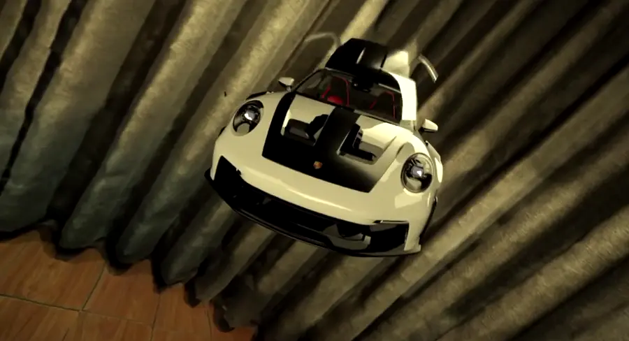
01 · BMW → Porsche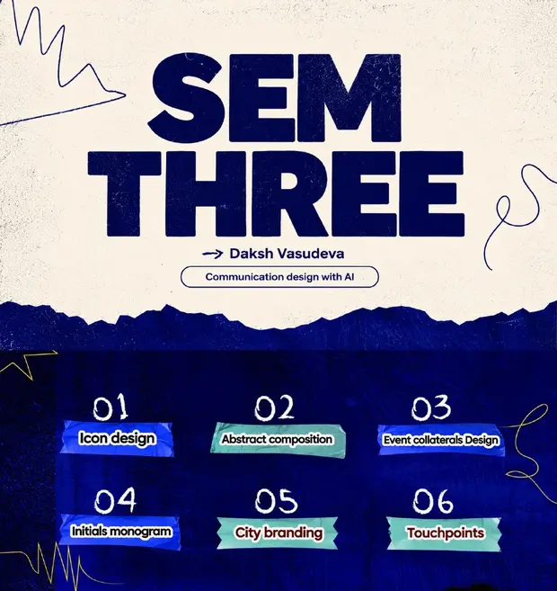
02 · Sem Three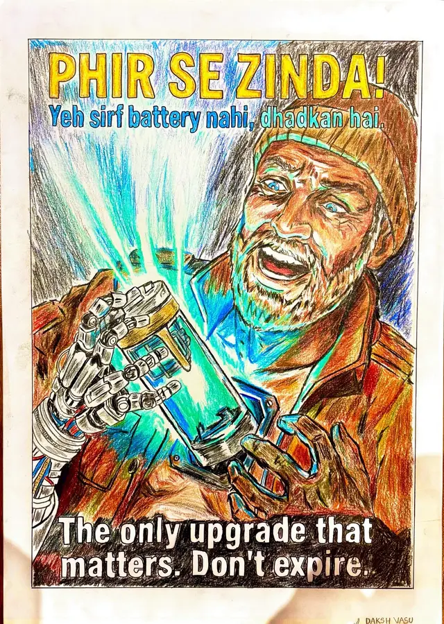
03 · Pencil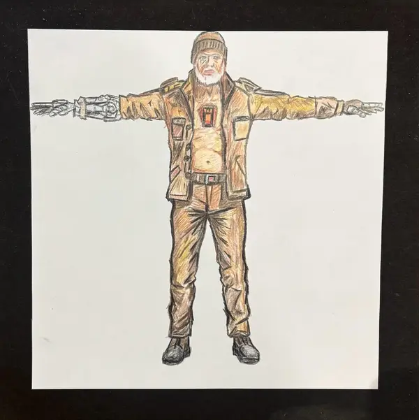
03 · the old man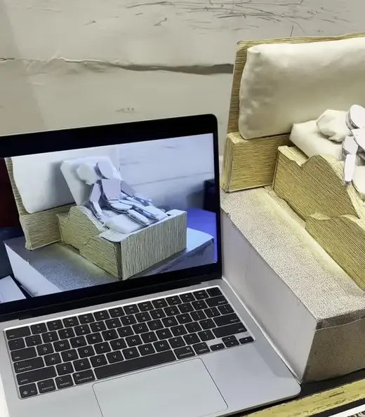
04 · The Everything Spacescrub the film · unroll the scroll · fold the bed
BMW to Porsche
a car comes out of a laptop screen, and transforms.
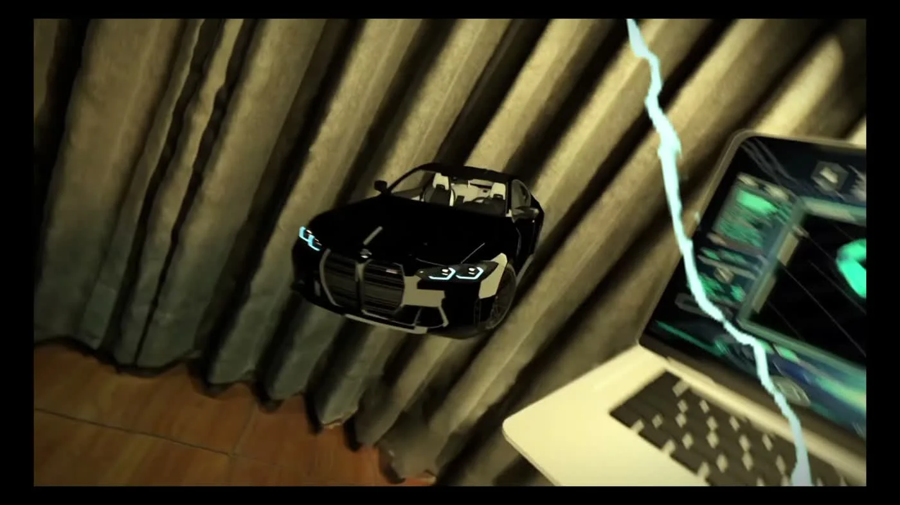
Semester Three portfolio
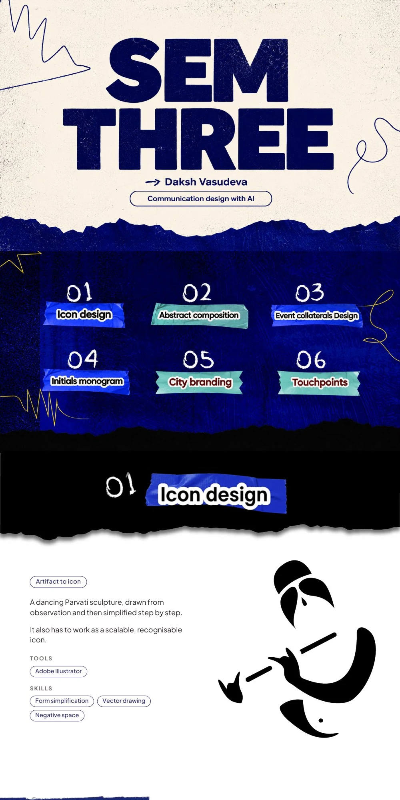
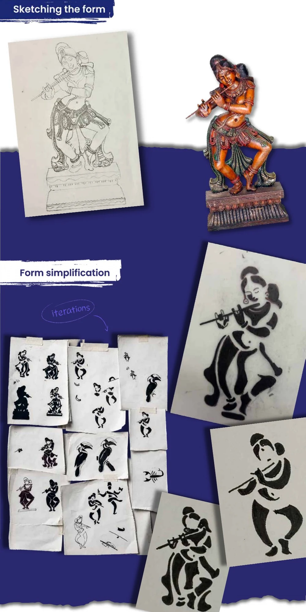
Storytelling
The Everything Space
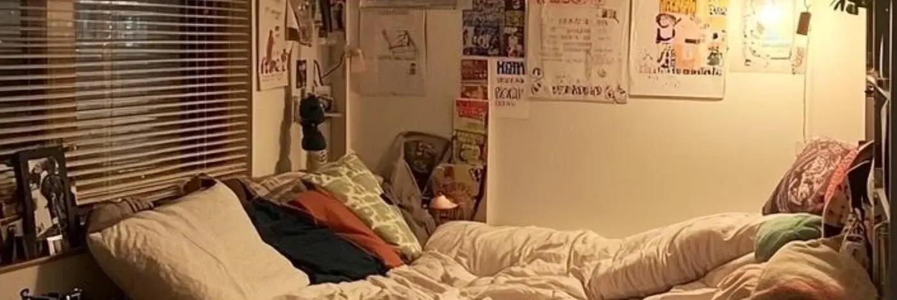
Work, rest and sleep in one bed, with nothing marking the switch between them.
The bed was never meant for this.
so: a bed that becomes a chair, with a table that comes out of it ↓
bed mode, rest
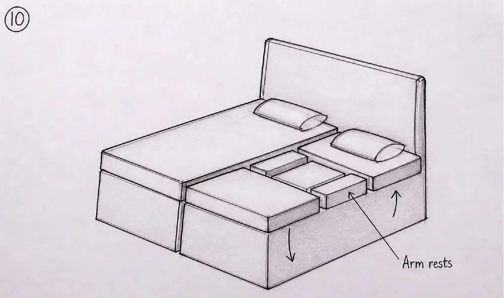
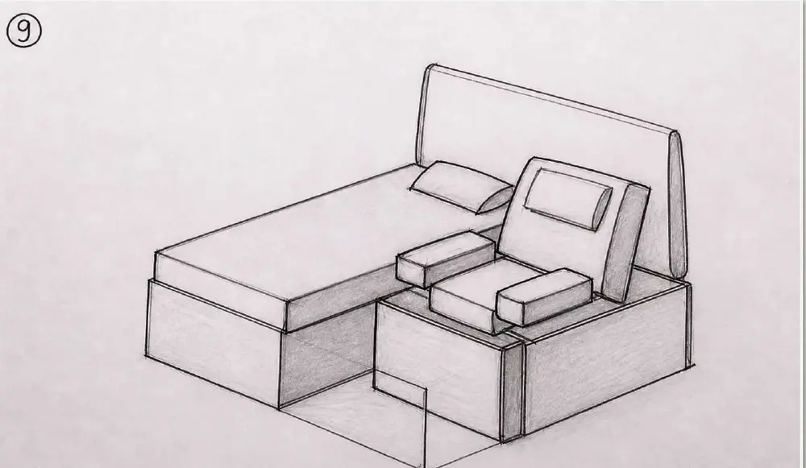
“a physical action that tells the brain the mode has changed.”
Drawing above is an illustration, redrawn from the team's mechanism sketches. The concept was explored as a scale model, not a tested full-size mechanism.
Step out of bed.
campaign film · 1:32- Directed by
- Swar Namdeo, Siddharth Mohan, Vikrant Karnwal
- DOP
- Swar Namdeo
- Edited by
- Siddharth Mohan
- Cast
- Dhairya Gupta, Daksh Vasudeva, Siddharth Mohan
- Makeup artists
- Iris Nandi, Sandali Dhillon
- Chitkara Design School
the storyboard
research team Daksh Vasudeva, Dhairya Gupta, Dhriti Jalota, Iris, Kritika Vyas, Parisha Sheoran, Riya Sharma, Sandali, Siddharth, Swar, Vikrant and Yashika.
05 / physical × digital
The Crossing.
A handmade game controller, built with Arduino, Blender and code. A rope-wrapped helm, a keypad and a sonar display bring the ship to life.
Play the 15-second experience ↗